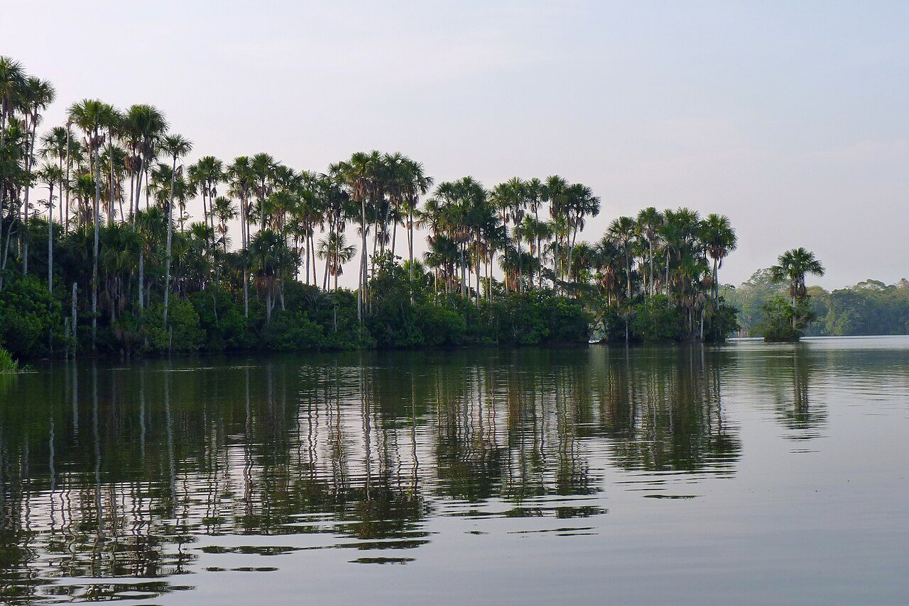

Madre de Dios · Amazonía peruana
Nuestra selva,
nuestro futuro
Educación ambiental para conocer, valorar y preservar Madre de Dios.
Conoce Madre de DiosUn territorio para conocer
Conoce Madre de Dios
En la Amazonía suroriental del Perú, montañas, llanuras y ríos forman el territorio donde las personas habitan y trabajan.
En el suroriente del Perú

- Superficie aproximada
- ≈85 000 km²
- Provincias
- 3
- Distritos
- 11
Departamentos vecinos: Ucayali, Cusco y Puno.
Países fronterizos: Brasil y Bolivia.
Cómo se documentan la superficie y los límites →Sus provincias y distritos
Tambopata4 distritosConocer Tambopata ↓
- Capital provincial
- Puerto Maldonado, también capital departamental
- Distritos
- Tambopata, Inambari, Las Piedras, Laberinto
- Ubicación orientativa
- Sector central y sureste del departamento.
Manu4 distritosConocer Manu ↓
- Capital provincial
- Salvación
- Distritos
- Manu, Fitzcarrald, Madre de Dios, Huepetuhe
- Ubicación orientativa
- Sector occidental del departamento.
Tahuamanu3 distritosConocer Tahuamanu ↓
- Capital provincial
- Iñapari
- Distritos
- Iñapari, Iberia, Tahuamanu
- Ubicación orientativa
- Sector norte y nororiental del departamento.
Bosques, ríos y humedales

Activa las capas del mapa y consulta sus registros. Las fechas corresponden a las fuentes; no es un monitoreo en tiempo real.
Consultar las capas del territorio →De las montañas a la llanura
Relieve, clima y cuencas ayudan a comprender la variedad del paisaje.
Comprender el relieve y las cuencas →Madre de Dios a través del tiempo
Una historia de pueblos, ríos y bosques anterior a la creación administrativa del departamento.
Recorrer la historia de Madre de Dios →El territorio también se vive
Lenguas, comunidades, trabajo y conocimientos forman parte de la vida del bosque.
Conocer a las personas del territorio →Todo está conectado
Elige una relación para seguir aprendiendo
Historias breves
¿Sabías que...?
Seis historias para mirar Madre de Dios desde otra perspectiva.
Continúa el recorrido: Consulta los registros de flora
Fuentes de estas historias
- SERNANP · Reserva Nacional Tambopata
- SERNANP · Plan de Manejo del recurso Castaña, Resolución Directoral N.° 006-2025-SERNANP-DGANP · 2025
- SERNANP · Reserva Nacional Tambopata, portal Visita Áreas Naturales
- Instituto de Investigaciones de la Amazonía Peruana (IIAP) · Estrategia regional de la diversidad biológica de Madre de Dios
Descubre
Biodiversidad
Conoce la diversidad de vida que habita nuestra región y descubre el papel que cumplen sus especies en los ecosistemas amazónicos.
Árboles, palmeras y otras plantas sostienen relaciones ecológicas y poseen usos forestales, alimentarios, medicinales y culturales.
Maderables
Árboles documentados para el aprovechamiento de madera; su registro no autoriza la corta.
Conocer shihuahuaco, cedro y capirona →No maderables
Semillas, frutos y materiales del bosque, con usos alimentarios, medicinales y culturales.
Conocer castaña, aguaje y huasái →Los usos pueden superponerse. Los totales regionales de medicinales y alimenticias siguen en revisión.
Explorar especies, usos y productos del bosque →En cifras
Mamíferos
especies registradas
Aves
especies registradas
Reptiles
especies reportadas
Anfibios
especies registradas
Los inventarios regionales pueden ampliarse con nuevos registros.
Fuente de las cifras de fauna
Peces · próxima categoría
Comprende
Ambiente
Cambios y conservación
Comprende cómo las actividades humanas y los procesos naturales transforman el territorio, y conoce las respuestas que buscan conservar y recuperar sus ecosistemas.
Transformaciones del bosque
La pérdida y degradación de cobertura cambian el paisaje. Conoce cómo se estudian esos cambios, los incendios y sus límites de interpretación.
Ver pérdida y degradación del bosque →Agua y contaminación
La minería y otras presiones pueden afectar el agua. El contexto de CINCIA permite distinguir lo documentado de lo que este visor no mide.
Leer los estudios sobre contaminación →Observar para recuperar
El trabajo de campo, los datos geográficos y las imágenes satelitales ayudan a comprender los cambios. Sus índices necesitan contexto y validación.
Comprender imágenes y trabajo de campo →Conservación y gestión
Conoce las categorías y formas de gestión de las áreas naturales protegidas nacionales presentes en Madre de Dios.
Consultar fichas de áreas protegidas →Ciencia
Investigaciones para comprender
Estudios sobre el uso del bosque y el conocimiento de los recolectores, con sus métodos y límites de interpretación.
Aportar un estudio sobre Madre de Dios →Leer · mirar · explorar
Sigue el hilo del conocimiento
De una especie a su territorio, y de una historia a sus fuentes.
Flora · ficha educativa
Castaña amazónica
Lo esencial, los procesos del bosque y los datos que puedes consultar.
Abrir ficha de castaña amazónica →Atlas · capas y registros
Leer el territorio
Acércate a los bosques, los ríos y los humedales.
Seleccionar las capas del mapa →Nuestra iniciativa
Sobre EcoSelva
EcoSelva Madre de Dios es una iniciativa de educación ambiental que pone el conocimiento sobre el territorio al alcance de la comunidad.
- Conocer
- Comprender
- Valorar
- Conservar

Misión
Acercar el conocimiento sobre la biodiversidad y el ambiente de Madre de Dios mediante contenidos educativos claros y confiables que promuevan su valoración y conservación.
Visión
Ser un referente de educación ambiental sobre Madre de Dios, acercando el conocimiento científico y ambiental a más personas.
Responsabilidad editorial
Cada contenido remite a su evidencia y reconoce sus límites.
Conoce nuestra metodología y fuentesColabora con EcoSelva
Comparte una investigación realizada en Madre de Dios para acercar sus hallazgos a la comunidad.
1. Envía tu estudio
Indica título, ámbito, resumen, enlace y contacto.
2. Revisamos las fuentes
Comprobamos su relación con Madre de Dios y su respaldo documental.
3. Acordamos la adaptación
Coordinamos contigo cualquier incorporación educativa.
Respetamos la autoría y las fuentes; el envío no implica una publicación automática.
Ver Registros documentados en Flora →
Ver Productos maderables en Flora →
Ver Productos forestales no maderables en Flora →
Ver Castaña amazónica en Flora →
Ver Plantas medicinales en Flora →
Ver Alimentos y frutos del bosque en Flora →
Ver El bosque también es conocimiento en Flora →
Ver Del bosque al producto en Flora →
Ver Castaña en Flora →
Ver Madera en Flora →
Ver Aguaje en Flora →
Ver Paca en Flora →
Ver Planta medicinal en Flora →
Ver La planta sigue siendo parte del bosque en Flora →
Ver ¿Aprovechar significa destruir? en Flora →
Ver Cuando el bosque también sostiene economías en Flora →
Ver De la especie al territorio y a su evidencia en Flora →
Ver Fuentes y alcance de esta lectura en Flora →
Ver La Amazonía no es un solo bosque en Territorio →
Ver El agua dibuja el territorio en Territorio →
Ver Donde el agua cambia la vida en Territorio →
Ver Una red, no una lista de ambientes en Territorio →
Ver ¿Qué nos brindan estos ecosistemas? en Territorio →
Ver ¿Qué pasa cuando se altera el territorio? en Territorio →
Ver ¿Cómo estudiamos el territorio? en Territorio →
Ver Mira, relaciona y explora en Territorio →
Ver Cada capa tiene una historia en Territorio →
Ver Fuentes y datos del registro en Territorio →
Ver Fuentes y datos del registro en Territorio →
Ver Un paisaje que cambia con el relieve en Territorio →
Ver Referencias sobre personas y territorio en Territorio →Ver Especies maderables documentadas en Flora →
Ver Especies no maderables documentadas en Flora →
Ver Productos maderables en Flora →
Ver Productos forestales no maderables en Flora →
Ver Plantas medicinales en Flora →
Ver Alimentos y frutos del bosque en Flora →
Ver El bosque también es conocimiento en Flora →
Ver Castaña en Flora →
Ver Madera en Flora →
Ver Aguaje en Flora →
Ver Paca en Flora →
Ver Planta medicinal en Flora →
Ver Del bosque al producto en Flora →
Ver La planta sigue siendo parte del bosque en Flora →
Ver ¿Aprovechar significa destruir? en Flora →
Ver Cuando el bosque también sostiene economías en Flora →
Ver De la especie al territorio y a su evidencia en Flora →
Ver Catálogo de las especies forestales maderables de la Amazonía y la Yunga Peruana en Flora →
Ver Guía de Productos Forestales no Maderables en Madre de Dios en Flora →
Ver Manual de Buenas Prácticas de Aprovechamiento Forestal en Flora →
Ver El aguaje: Superalimento amazónico, y los beneficios del manejo y conservación de los aguajales para el desarrollo regional amazónico en Flora →
Ver Secado de tablillas de bambú nativo en la Amazonía peruana en Flora →
Ver Mapa Nacional de Cobertura Vegetal. Memoria descriptiva en Flora →
Ver Ficha del pueblo Ese Eja en Flora →
Ver Resolución Viceministerial N.° 046-2018-VMPCIC-MC en Flora →
Ver Análisis del aprovechamiento de madera en concesiones para castaña en Madre de Dios en Flora →
Ver Seed dispersal of the Brazil nut tree (Bertholletia excelsa) by scatter-hoarding rodents in a central amazonian forest en Flora →
Ver Nut Production in Bertholletia excelsa across a Logged Forest Mosaic: Implications for Multiple Forest Use en Flora →
Ver Fuentes y alcance de esta lectura en Flora →
Ver Una planta, muchas relaciones en Flora →
Ver Explora el territorio en Territorio →
Ver Registros del mapa de Madre de Dios en Territorio →
Ver Castañales de Madre de Dios en Territorio →
Ver La Amazonía no es un solo bosque en Territorio →
Ver El agua dibuja el territorio en Territorio →
Ver Aguajales en Territorio →
Ver Donde el agua cambia la vida en Territorio →
Ver Una red, no una lista de ambientes en Territorio →
Ver ¿Qué nos brindan estos ecosistemas? en Territorio →
Ver ¿Qué pasa cuando se altera el territorio? en Territorio →
Ver ¿Cómo estudiamos el territorio? en Territorio →
Ver Funciones del bosque en Territorio →
Ver Funciones del río en Territorio →
Ver Funciones del humedal en Territorio →
Ver Mira, relaciona y explora en Territorio →
Ver Mapa Nacional de Cobertura Vegetal — MINAM 2015 en Territorio →
Ver Mapa Nacional de Ecosistemas del Perú — MINAM 2019 en Territorio →
Ver El aguaje: superalimento amazónico y conservación de los aguajales en Territorio →
Ver Descripciones oficiales de Tambopata, Manu y Bahuaja-Sonene en Territorio →
Ver Inventario biológico rápido del río Madre de Dios y sus tributarios en Territorio →
Ver Amazon forests capture high levels of atmospheric mercury pollution from artisanal gold mining en Territorio →
Ver Prevención de incendios forestales en Madre de Dios en Territorio →
Ver Geobosques: monitoreo de cobertura y pérdida de bosques en Territorio →
Ver Sentinel-2 e índices NDVI y NBR en Territorio →
Ver Cada capa tiene una historia en Territorio →